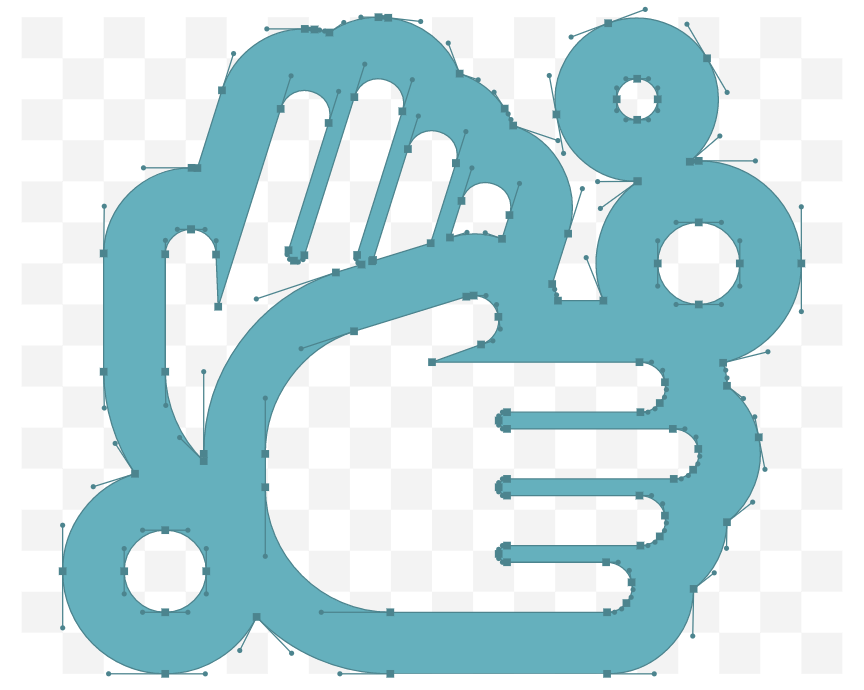
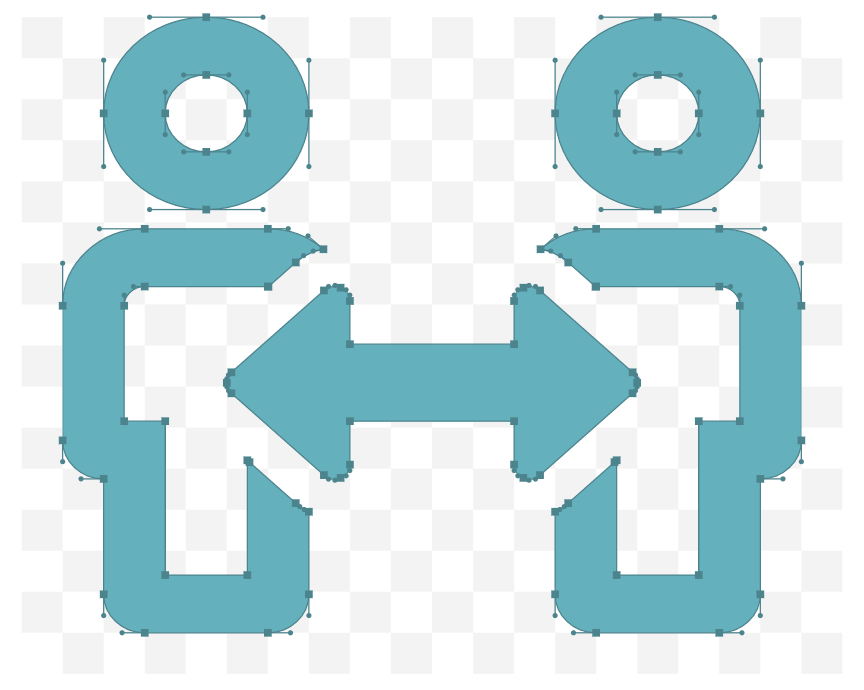
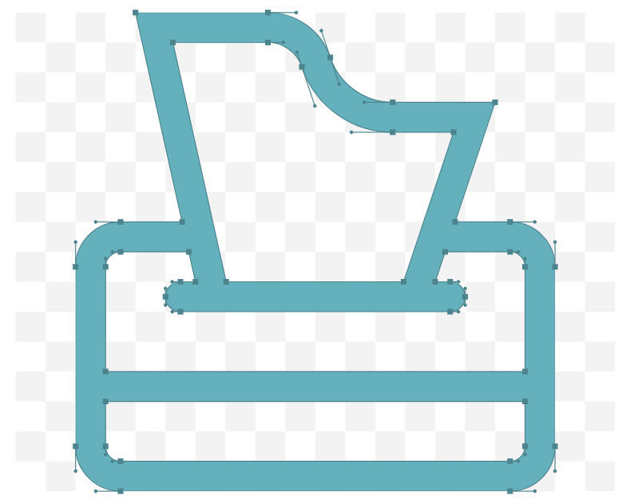
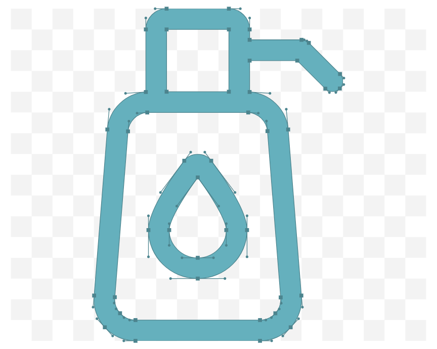

Coronavirus Disease 2019 (COVID-19)
How to protect yourself & others:
Know how it spreads
- There is currently no vaccine to prevent coronavirus disease 2019 (COVID-19).
- The best way to prevent illness is to avoid being exposed to this virus.
- The virus is thought to spread mainly from person-to-person.
- Between people who are in close contact with one another (within about 6 feet).
- Through respiratory droplets produced when an infected person coughs, sneezes or talks.
- These droplets can land in the mouths or noses of people who are nearby or possibly be inhaled
into
the lungs.
- Some recent studies have suggested that COVID-19 may be spread by people who are not showing
symptoms.
Everyone should

Wash your hands often
- Wash your hands often with soap and water for at least 20 seconds especially after you have been in
a public place, or after blowing your nose, coughing, or sneezing.
- If soap and water are not readily available, use a hand sanitizer that contains at least 60%
alcohol. Cover all surfaces of your hands and rub them together until they feel dry.
- Avoid touching your eyes, nose, and mouth with unwashed hands.

Avoid close contact
- Avoid close contact with people who are sick, even inside your home. If possible, maintain 6
feet between the person who is sick and other household members.
- Put distance between yourself and other people outside of your home.
- Remember that some people without symptoms may be able to spread virus.
- Stay at least 6 feet (about 2 arms’ length) from other people.
- Do not gather in groups.
- Stay out of crowded places and avoid mass gatherings.
- Keeping distance from others is especially important for people who are at higher risk of
getting very sick.
head side mask icon
Cover your mouth and nose with a cloth face cover when around others
- You could spread COVID-19 to others even if you do not feel sick.
- Everyone should wear a cloth face cover when they have to go out in public, for example to the
grocery store or to pick up other necessities.
- Cloth face coverings should not be placed on young children under age 2, anyone who has trouble
breathing, or is unconscious, incapacitated or otherwise unable to remove the mask without
assistance.
- The cloth face cover is meant to protect other people in case you are infected.
- Do NOT use a facemask meant for a healthcare worker.
- Continue to keep about 6 feet between yourself and others. The cloth face cover is not a substitute
for social distancing.

Cover coughs and sneezes
- If you are in a private setting and do not have on your cloth face covering, remember to always
cover your mouth and nosewith a tissue when you cough or sneeze or use the inside of your
elbow.
- Throw used tissues in the trash.
- Immediately wash your hands with soap and water for at least 20 seconds. If soap and water
are not readily available, clean your hands with a hand sanitizer that contains at least 60%
alcohol.

Clean and disinfect
- Clean AND disinfect frequently touched surfaces daily. This includes tables, doorknobs, light
switches, countertops, handles, desks, phones, keyboards, toilets, faucets, and sinks.
- If surfaces are dirty, clean them. Use detergent or soap and water prior to disinfection.
- Then, use a household disinfectant. Most common EPA-registered household
disinfectantsexternal icon will work